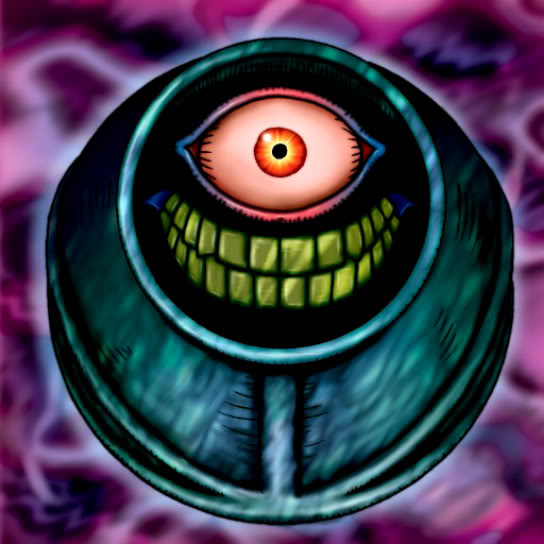

Morphing Jar

STATS
ATK: 700
DEF: 600DECK COST
Deck Cost per Card: 13Fusion List (34 Possible Fusions)
- Morphing Jar + Ancient Sorcerer = Ushi Oni
- Morphing Jar + Blackland Fire Dragon = Stone D.
- Morphing Jar + Bone Mouse = Stone Ghost
- Morphing Jar + Curtain of the Dark Ones = Ushi Oni
- Morphing Jar + Dark Elf = Mystical Sand
- Morphing Jar + Fire Reaper = Stone Ghost
- Morphing Jar + Flame Snake = Dissolverock
- Morphing Jar + Gemini Elf = Mystical Sand
- Morphing Jar + Kageningen = Minomushi Warrior
- Morphing Jar + Key Mace = Mystical Sand
- Morphing Jar + Lady of Faith = Mystical Sand
- Morphing Jar + LaMoon = Mystical Sand
- Morphing Jar + M-Warrior #1 = Minomushi Warrior
- Morphing Jar + M-Warrior #2 = Minomushi Warrior
- Morphing Jar + Magician of Faith = Mystical Sand
- Morphing Jar + Masaki the Legendary Swordsman = Minomushi Warrior
- Morphing Jar + Mech Mole Zombie = Stone Ghost
- Morphing Jar + Monsturtle = Boulder Tortoise
- Morphing Jar + Mushroom Man #2 = Minomushi Warrior
- Morphing Jar + Mystic Lamp = Ushi Oni
- Morphing Jar + Petit Dragon = Stone D.
- Morphing Jar + Phantom Dewan = Ushi Oni
- Morphing Jar + Queen's Double = Mystical Sand
- Morphing Jar + Right Arm of the Forbidden One = Ushi Oni
- Morphing Jar + Swordsman from a Foreign Land = Minomushi Warrior
- Morphing Jar + The Wandering Doomed = Flame Ghost
- Morphing Jar + Turtle Raccoon = Boulder Tortoise
- Morphing Jar + Unknown Warrior of Fiend = Minomushi Warrior
- Morphing Jar + Wow Warrior = Minomushi Warrior
- Morphing Jar + Water Magician = Mystical Sand
- Morphing Jar + Waterdragon Fairy = Mystical Sand
- Morphing Jar + Wicked Dragon with the Ersatz Head = Stone D.
- Morphing Jar + Witch of the Black Forest = Mystical Sand
- Morphing Jar + Yamatano Dragon Scroll = Stone D.